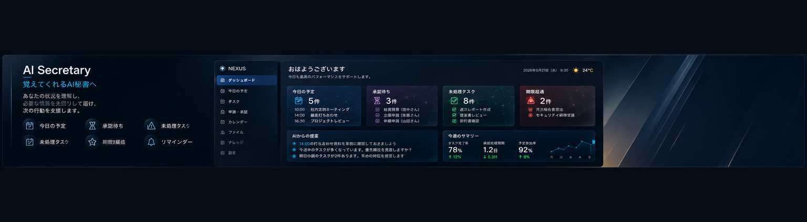
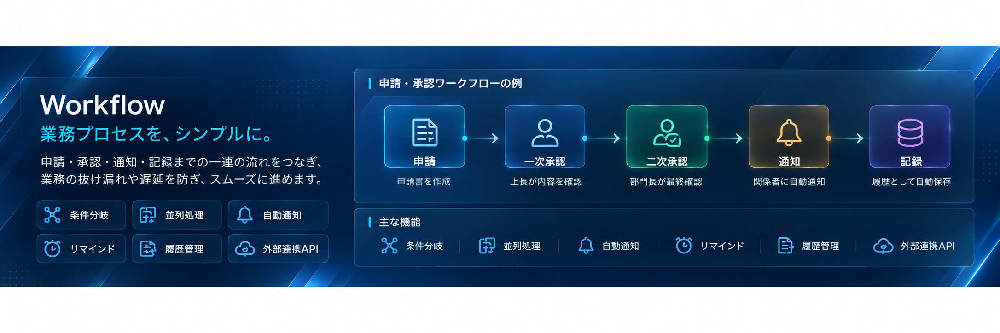
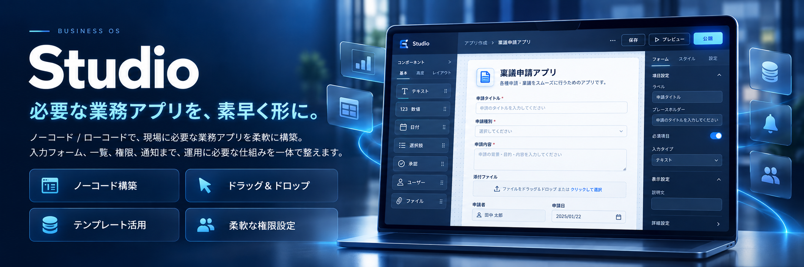
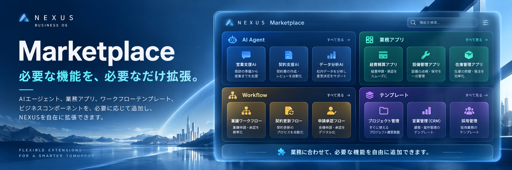
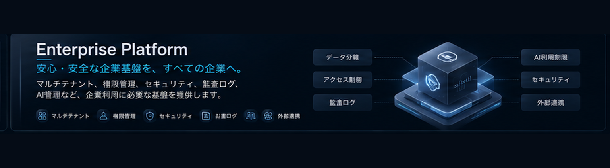

勤怠、予定、申請・承認、タスク、ファイル、ナレッジ。企業には日々、多くの情報が生まれます。
これまで分散していた業務情報をひとつにつなぎ、人・組織・業務データ・AIが連携する企業基盤を提供します。
WHAT IS NEXUS
NEXUSは、企業活動の中心となるBusiness OSです。
勤怠、予定、申請・承認、タスク、ファイル、ナレッジ。企業には日々、多くの情報が生まれます。
これまで分散していた業務情報をひとつにつなぎ、人・組織・業務データ・AIが連携する企業基盤を提供します。
Business Core × AI × Workflow × Studio
BUSINESS OS ARCHITECTURE
Business Coreを中心に、AI・自動化・アプリ構築・拡張を一体化します。
AI SECRETARY
予定、承認待ち、未処理、期限超過。必要な情報を先回りして届け、次の行動を支援します。

WORKFLOW
申請、承認、通知、記録まで。一連の流れをつなぎ、抜け漏れや遅延を防ぎます。

STUDIO
ノーコード / ローコードで、現場に必要な業務アプリを柔軟に構築します。

MARKETPLACE
AI Agent、業務アプリ、Workflow、テンプレート。企業の成長に合わせて拡張できます。

ENTERPRISE PLATFORM
マルチテナント、権限管理、監査ログ、AI管理、外部連携。企業利用に必要な基盤を提供します。

NEXUS × NEXIT
導入相談、デモ、機能についてお気軽にお問い合わせください。